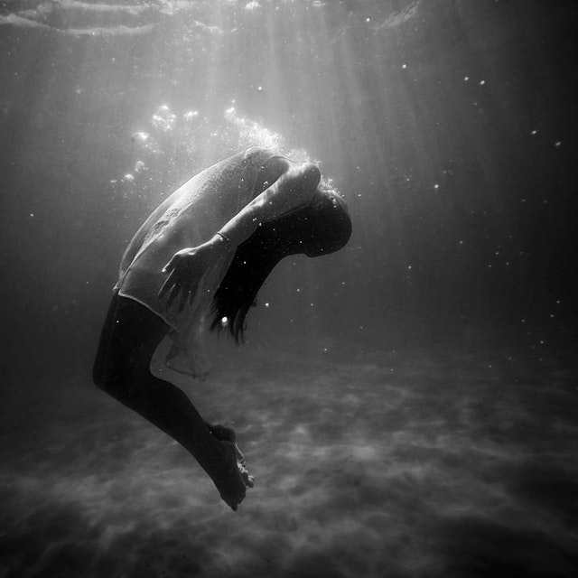
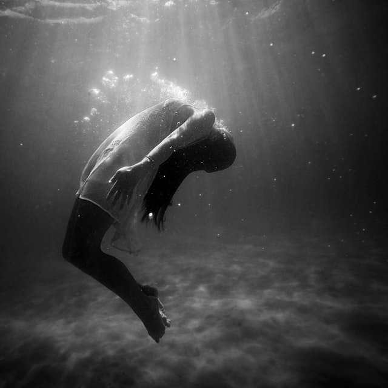
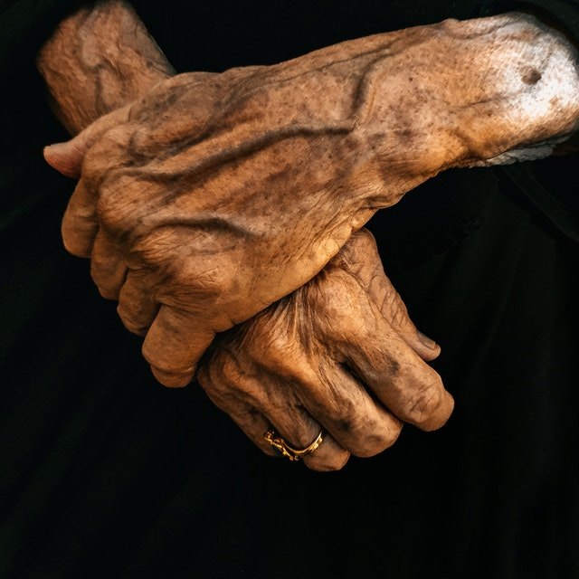
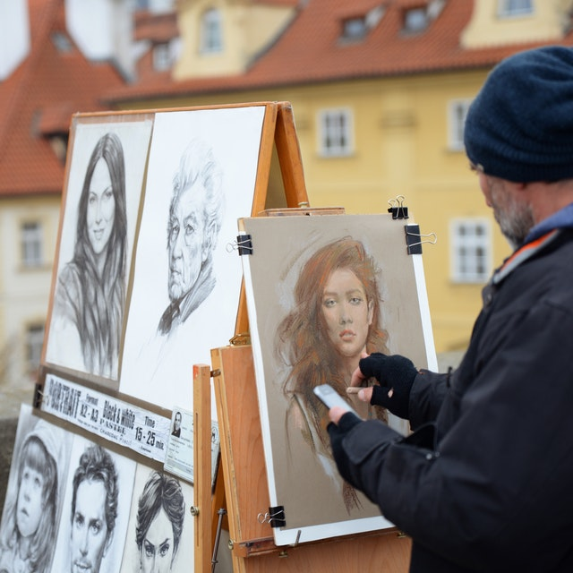
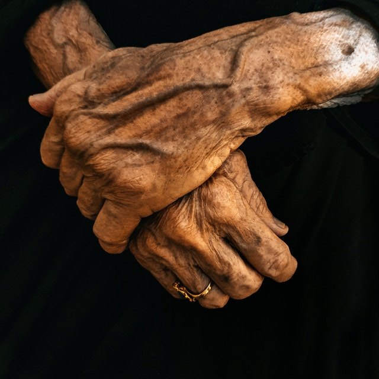
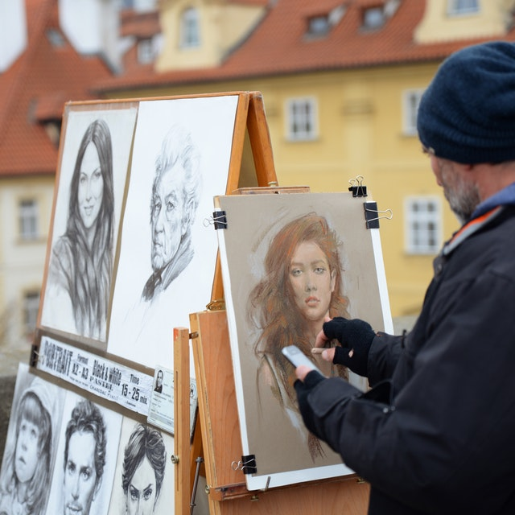

Publikationer
Här hittar du Konstnärsnämndens publikationer sorterade på utgivningsår. Klicka på respektive publikation för att läsa mer, ladda ner eller beställa ett exemplar. Remisser, årsredovisningar med mer finns i högerspalten.

Här hittar du Konstnärsnämndens publikationer sorterade på utgivningsår. Klicka på respektive publikation för att läsa mer, ladda ner eller beställa ett exemplar. Remisser, årsredovisningar med mer finns i högerspalten.
Coronapandemins konsekvenser för konstnärers villkor – Konstnärsnämnden har på uppdrag av regeringen analyserat coronapandemins konsekvenser för konstnärers ekonomiska och sociala villkor.
Digitaliseringens konsekvenser för konstnärers villkor – Konstnärsnämnden har lämnat en rapport till regeringen om hur digitaliseringen påverkat konstnärers villkor. Vi har i samverkan med upphovsrätts- och yrkesorganisationer, samt med PRV kartlagt situationen med särskilt fokus på konstnärers möjlighet att få betalt när deras verk nyttjas och sprids digitalt.
Konstnärsnämndens krisstipendier till konstnärer 2020 – Konstnärer har drabbats hårt ekonomiskt. Därför fick Konstnärsnämnden i uppdrag från regeringen att fördela krisstöd till enskilda yrkesverksamma konstnärer vid två tillfällen under 2020. Denna rapport är en uppföljning av dessa krisstöd.
Konstnärers ekonomiska villkor under pandemin – Konstnärsnämnden har på eget initiativ tagit fram rapporten som följer upp hur pandemin har påverkat konstnärerna och hur de statliga krisstöden har nått ut till yrkesverksamma konstnärer. Rapporten är tänkt att ge kunskap inför att framtida stödåtgärder utformas och vara ett underlag för regeringen, Konstnärsnämnden och andra myndigheter.
Företagsplanering för konstnärligt yrkesverksamma – ger vägledning till dig som är konstnär och har ett företag eller funderar på att starta ett. Här kan du hitta svar på frågor som: Vilken företagsform passar mig? Hur bokför jag? Vilka skatter betalar jag som företagare? Hur fungerar trygghetssystemen för företagare?
Skriften är knuten till myndighetens arbete med Konstnärsguiden.
1% för konstnärlig gestaltning av offentlig miljö - en komparativ studie av enprocentsregeln i kommuner och regioner. Konstnärlig gestaltning av offentlig miljö är en viktig del av konstnärers arbetsmarknad. Den finansieras inte bara via kultursektorns offentliga medel, utan också av byggsektorn, som har en betydligt större ekonomi. En procent av bygginvesteringen ska användas för konstnärlig gestaltning i det offentliga rummet. Undersökningen visar bland annat att regeln är mer livskraftig än den var för sex år sedan.
Konstnärers villkor som pensionärer – Hur ser den ekonomiska situationen ut för konstnärer i pensionsåldern? Denna rapport är den första som särskilt tittar på de ekonomiska och sociala villkoren för konstnärer 67 år och äldre.
Pensionsplanering för konstnärligt yrkesverksamma. -Skriften är en praktisk vägledning, främst för dig som är konstnärligt yrkesverksam och frilansar. Den innehåller många tips som t.ex. hur pensionen fungerar, om att ta ut pension i utlandet till pensionsplanering inom familjen och mycket annat. Den kan med fördel läsas även av redovisningskonsulter och andra som hjälper konstnärer med deras ekonomi.
Skriften är knuten till myndighetens arbete med Konstnärsguiden.
Utländsk bakgrund - fördelning av stipendier och bidrag till enskilda konstnärer 2016. -Har konstnärer med bakgrund i andra länder än Sverige samma förutsättningar att vara yrkesverksamma som konstnärer med svensk bakgrund? Konstnärsnämnden har undersökt hur det förhåller sig med de konstnärer som söker stipendier och bidrag hos oss, respektive vilka som beviljas bidrag.
In English. Foreign background – Distribution of grants and subsidies to individual artists in 2016
Konstnärers arbetsmiljö - Konstnärsnämnden har kartlagt arbetsmiljön för konstnärer verksamma inom områdena ord, bild och form, musik, teater, dans och film. Rapporten bygger på en enkät som har besvarats av 1 859 individer med frågor om såväl fysiska som psykosociala aspekter av arbetsmiljön
Konstnärernas demografi, inkomster och sociala situation - Rapporten behandlar områdena konstnärernas inkomster, utbildning, sociala bakgrund, utländsk bakgrund, självförsörjningsgrad och inkomstspridning.
Statistik- och fördjupningsrapport - Stipendier och bidrag inklusive de internationella programmen samt Kulturbryggan.
Självcensur, yttrandejämlikhet och yttrandefrihet - I Konstnärsnämndens rapport Självcensur, yttrandejämlikhet och yttrandefrihet reder Ludvig Beckman, professor i statsvetenskap, ut grundläggande de begreppen.
Konstnärlig kvalitet med demokratiska perspektiv - Jämställdhetsintegrerad bedömning av ansökningar om bidrag och stipendier.
Policyhandbok om konstnärliga residens - Konstnärsnämnden har översatt en rapport med rekommendationer från EU. Bland annat om hur man bygger upp och driver residens.
Rätten till konstnärlig frihet och kreativitet - rapport från FN:s särskilda rapportör för kulturella rättigheter, Farida Shaheed. En genomgång av staters skyldighet att respektera, skydda och uppfylla rättigheter för konstnärlig frihet.
Internationellt kulturutbyte på musikområdet - om att utveckla ett internationellt kulturutbyte på musikområdet som bygger på erfarenheterna från Iaspis och Internationella dansprogrammet.
Förslag till former för ett internationellt utbytesprogram för litterära upphovspersoner - en underskning av möjligheterna för att utformat internationellt utbytesprogram inom litteraturområdet.
Översyn över statens insatser inom dansområdet - en analys och bedömning av hur statens insatser inom dansområdet motsvarar dagens och framtida utvecklingsbehov
Konstnärsnämndens undersökningar om konstnärer med utländsk bakgrund Konstnärsnämndens fördelning av stipendier och bidrag går i lika stor utsträckning till konstnärer med svensk som utländsk bakgrund.
Ingen regel utan undantag - Enprocentregeln för konstnärlig gestaltning av offentlig miljö - en översyn över regeln och dess innebörd, hur den omsätts i praktiken och en diskussion kring hinder och möjligheter i implementeringen av regeln.
Konstnären och kulturnäringarna - en överblick över olika perspektiv på konstnärens roll i de kulturella och kreativa näringarna liksom kulturekonomins betydelse för konstnärerna.
Konstnärernas inkomster, arbetsmarknad och försörjningsmönster del 3 - den tredje rapporten i Konstnärsnämndens serie om konstnärliga yrkesutövares inkomstsituation.
Uppföljning av statliga långtidsstipendier till konstnärer 2011
Rapport om konstnärernas ekonomi, arbete och familjeliv ur ett jämställdhetsperspektiv - del 2. - Rapporten kartlägger konstnärernas ekonomiska jämställdhet genom att ta fram och analysera inkomster, tillgångar och transfereringar som kvinnor och män har inom de konstnärliga yrkesområdena.
Konstnärernas inkomster del 1 - Undersökningen är den mest omfattande som gjorts i Sverige och omfattade 21 500 konstnärer inom sju konstområden.
Komponisterna i Sverige - Utredningen ger en bild av förutsättningarna för komponisternas möjligheter att vara konstnärligt verksamma i Sverige.
Om utställningsersättning - Utredningens syfte var att visa hur ersättningen fungerat i teori och praktik under åren 2004-2006.
Konstnärer i kulturpolitiken - Rapporten är en fördjupad analys av de olika konstområdenas situation i kulturpolitiken. Den belyser nya villkor på arbetsmarknaden för de olika konstnärskategorierna och visar på konsekvenserna av eventuella förändringar.
Konstnärsnämndens bidragsgivning 2002-2004 uppdelad på kvinnor och män. En kartläggning. - Denna rapport redogör i huvudsak för stipendie- och bidragsgivningen åren 2002–2004.
I juni tilldelades Konstnärsnämnden 92 miljoner av regeringens krisstöd för att mildra de ekonomiska konsekvenserna av pandemin och för att underlätta en återstart. Konstnärsnämndens styrelse beslutade i september att 50 miljoner av dessa ska fördelas som extra arbetsstipendier för att främja en återstart av konstnärers yrkesverksamhet.”

I årets tredje fördelning av bidrag till internationellt utbyte och resebidrag beviljas bland andra Emma Kumlien, musikalartist, resebidrag för att ta dansklasser, samt bredda sitt kontaktnät, i London.
Konstnärsnämndens styrelse har den 25 oktober 2021 beslutat att bevilja elva konstnärer ett 10-årigt långtidsstipendium, sex av konstnärerna är verksamma inom musikområdet och fem inom bild- och formområdet.
For more than three decades, she has challenged, fascinated and confounded. Meet one of Sweden’s most prominent artists Annika Elisabeth von Hausswolff, in the exhibition “Alternative Secrecy”

Välkommen till ett publikt seminarium om att bygga och upprätthålla infrastrukturer för omlärande och kunskapsproduktion. Medverkande är bland andra Miguel Robles-Durán, Joseph Bohigas, Yelta Köm, Merve Gül Özokcu, Nishat Awan, Ignacio G. Galán, Pelin Tan och Magnus Ericson.
Under 2021 kommer konstnärer och kulturarbetare från Belarus att få möjlighet att vistas och arbeta på Konstepidemin i Göteborg inom programmet Art Residency – STATUS project. Deltagarna kommer också att matchas med konstnärer från Västra Götalandsregionen, en ”Residence Companion”, för ett personligt utbyte kring konstnärligt arbete.
Perspektiv på digitaliseringens konsekvenser för konstnärers villkor
Seminarium på Konstnärsnämnden, 8 oktober 2021
Moderator: Anders Rydell
 

 


